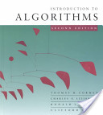

Local: Sala no Google Meet: meet.google.com/znx-iepz-gca
Horário: 2as e 4as, das 8h às 10h.
Início: 17 de novembro de 2021.
-
Repositório do código criado em sala de aula.
Jamboard com rascunhos e notas de aula.
- Ementa aproximada:
- Noções de análise de complexidade de algoritmos;
- Listas lineares: alocação sequencial e alocação encadeada;
- Filas e pilhas;
- Hashing;
- Árvores, árvore binária de busca, árvores binárias de busca balanceadas;
- Programação dinâmica e memoização;
- Conjuntos disjuntos;
- Heaps;
- Algoritmos de ordenação.
- Avaliação:
M = (P1 + P2) / 2 ≥ 6.0 --> aprovação direta;
do contrário, MF = (M + PF) / 2 ≥ 5.0 --> aprovação;
MF < 5.0 --> reprovação.
- Provas:
- P1:
- P2:
- PF:
Primeira conversa sobre o curso: derrotando o código alheio.
(Comparem a ementa deste curso com o e-mail do Google com dicas para se preparar para uma entrevista para trabalhar com eles.)
Começando a pensar em complexidade de algoritmos, e a compará-las.
Programinha em Python para visualização de funções que tipicamente representam complexidades assintóticas.
Gravação da aula.
Complexidade de tempo e de espaço. Análise de pior caso e caso médio.
Exemplo: o problema do par com a menor diferença absoluta.
Implementação em Python de um algoritmo O(n^2).
Gravação da aula.
Comportamento assintótico, notação O (Big-Oh): entendendo como cresce o tempo (ou espaço) utilizado por um algoritmo em função do tamanho da entrada.
Um segundo algoritmo para o problema do par com a menor diferença absoluta.
Gravação da aula.
O problema da celebridade (código em Python). Algoritmo quadrático vs algoritmo linear.
Por que você não deve nunca mais simplesmente escrever algo "que funcione", sem se preocupar se performance pode ser um problema.
Gravação da aula.
Horário: 2as e 4as, das 8h às 10h.
Início: 17 de novembro de 2021.
Jamboard com rascunhos e notas de aula.
- Noções de análise de complexidade de algoritmos;
- Listas lineares: alocação sequencial e alocação encadeada;
- Filas e pilhas;
- Hashing;
- Árvores, árvore binária de busca, árvores binárias de busca balanceadas;
- Programação dinâmica e memoização;
- Conjuntos disjuntos;
- Heaps;
- Algoritmos de ordenação.
M = (P1 + P2) / 2 ≥ 6.0 --> aprovação direta;
do contrário, MF = (M + PF) / 2 ≥ 5.0 --> aprovação;
MF < 5.0 --> reprovação.
- P1:
- P2:
- PF:
Bibliografia sugerida
| Estruturas de Dados e seus Algoritmos | Introduction to Algorithms | ||
| (J. L. Szwarcfiter, L. Markenzon) | (Cormen, Leiserson, Rivest & Stein) | ||
 |  |
Conteúdo das aulas
17/11
Primeira conversa sobre o curso: derrotando o código alheio.
(Comparem a ementa deste curso com o e-mail do Google com dicas para se preparar para uma entrevista para trabalhar com eles.)
Começando a pensar em complexidade de algoritmos, e a compará-las.
Programinha em Python para visualização de funções que tipicamente representam complexidades assintóticas.
Gravação da aula.
22/11
Complexidade de tempo e de espaço. Análise de pior caso e caso médio.
Exemplo: o problema do par com a menor diferença absoluta.
Implementação em Python de um algoritmo O(n^2).
Gravação da aula.
24/11
Comportamento assintótico, notação O (Big-Oh): entendendo como cresce o tempo (ou espaço) utilizado por um algoritmo em função do tamanho da entrada.
Um segundo algoritmo para o problema do par com a menor diferença absoluta.
Gravação da aula.
01/12
O problema da celebridade (código em Python). Algoritmo quadrático vs algoritmo linear.
Por que você não deve nunca mais simplesmente escrever algo "que funcione", sem se preocupar se performance pode ser um problema.
Gravação da aula.